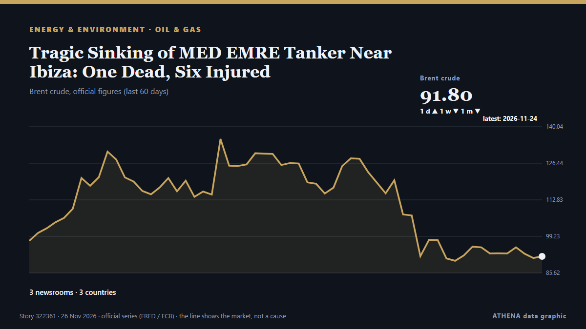

Πετρέλαιο & φυσικό αέριο
ΧορηγούμενοΠαρουσιάζεται από  Cybernetics and Artificial Intelligence Lab Welcome to the Cybernetics and Artificial Intelligence Laboratory, established at the Department of Business Administration of the National and Kapodistrian University of Athens. The lab is headed by Professor Dimitrios Thomakos. The lab aims to do research that can be published in top venues. Our research uses tools and methods of Artificial Intelligence, and lies in the following areas: - Forecasting - Decision making - Cyber security - Finance We are always looking forward to collaborating with exceptional students!
Cybernetics and Artificial Intelligence Lab Welcome to the Cybernetics and Artificial Intelligence Laboratory, established at the Department of Business Administration of the National and Kapodistrian University of Athens. The lab is headed by Professor Dimitrios Thomakos. The lab aims to do research that can be published in top venues. Our research uses tools and methods of Artificial Intelligence, and lies in the following areas: - Forecasting - Decision making - Cyber security - Finance We are always looking forward to collaborating with exceptional students!
| 13 Νοε | 0 |
|---|---|
| 14 Νοε | 0 |
| 15 Νοε | 0 |
| 16 Νοε | 0 |
| 17 Νοε | 0 |
| 18 Νοε | 0 |
| 19 Νοε | 1 |
| 20 Νοε | 1 |
| 21 Νοε | 0 |
| 22 Νοε | 1 |
| 23 Νοε | 2 |
| 24 Νοε | 8 |
| 25 Νοε | 8 |
| 26 Νοε | 3 |
Οι τίτλοι των ειδήσεων παρουσιάζονται στα αγγλικά, όπως δημοσιεύτηκαν.

Tragic Sinking of MED EMRE Tanker Near Ibiza: One Dead, Six Injured
The Malta-flagged MED EMRE tanker sank off Ibiza, resulting in one death and six injuries among the crew while carrying 7,000 tons of diesel. από SeaNews Türkiye
Equinor, JAPEX agree NCS asset swap, trading Goliat stake for more of Verdande
Equinor will trade an 8% stake in Goliat and interests in two Norwegian Sea exploration licenses to JAPEX in exchange for JAPEX's 3.5% stake in Verdande and $65 million in cash. από World Oil
Dangote Refinery to list on Nigerian Exchange December 1
The Dangote Petroleum Refinery says it will begin trading on the Nigerian Exchange (NGX) Group on December 1, marking its entry into the Nigerian stock market following its initial public offering… από Vanguard
Iraqi PM orders ministry to manage oilfields in areas under Kurdish control
BAGHDAD, Nov 24 - Iraq's prime minister has ordered the energy ministry to manage oilfields in areas under Kurdish control, in a move likely to further strain relations with the semi-autonomous… από The Straits Times
Saipem wins $650 million in Aramco offshore contracts across five Saudi fields
Saipem has won two Aramco offshore contracts worth about $650 million, covering seven production deck manifolds, about 39 km of pipeline and 41 km of power cable across the Marjan, Safaniya, Manifa… από World Oil
Iraq presses OPEC+ to raise oil output
Baghdad (IraqiNews.com) – Iraq is pushing OPEC+ to raise its estimated crude oil production capacity ahead of the group’s scheduled meeting on November 29 to set 2027 output quotas. από Iraqi News
QatarEnergy, JBIC ink LNG pact
State-owned LNG giant QatarEnergy has entered into a memorandum of understanding with the Japan Bank for International Cooperation (JBIC) to cooperate across the energy value chain, including LNG and… από LNG Prime
US data centre boom through 2028 will lift power and gas demand: Goldman Sachs
The rapid expansion could further tighten US power markets and increase natural gas demand. από The Business Times
Qatar LNG exports hit post-war high despite rising insurance costs
LONDON: Qatar’s liquefied natural gas exports are on track for their busiest month since the outbreak of the US-Iran conflict despite a sharp rise in insurance costs, with a record number of tankers… από Business Recorder
Iraq foils oil smuggling operations in Dhi Qar, Kirkuk
Baghdad (IraqiNews.com) – The Iraqi National Security Service (INSS) announced on Wednesday that it foiled oil smuggling operations across Dhi Qar and Kirkuk provinces. από Iraqi News
Iraqi MP Suspected of Smuggling Accuses al-Nujaba Faction of Seizing Oil Pipeline
Shafaq News- Najaf Iraqi lawmaker Abdul Hadi al-Hassnawi, who faces an arrest warrant in an oil smuggling case in Najaf, said on Tuesday that the pipeline breach at the center of the investigation… από Shafaq News (English)
China, India set for record Russian oil imports in 2026
China and India are on track for record Russian oil imports this year, plugging a supply gap caused by the Iran war, as US sanctions waivers eased purchases and Ukrainian drone attacks knocked out… από Business Recorder
TotalEnergies strengthens its partnership with Continental Resources to develop its gas production
TotalEnergies has signed a new agreement with Continental Resources, under which TotalEnergies acquires interests in natural gas upstream assets. από Cyprus Shipping News
Iraq PM sacks senior officials over oil smuggling scandal
Iraq's prime minister has sacked senior officials over an oil smuggling investigation and ordered tighter federal control over Kurdistan's oil exports. από The New Arab
Putin Calls for More Oil Refining in Siberia, Russia’s Far East
Russian President Vladimir Putin on Tuesday told a meeting of his fuel and energy commission that Russia must develop oil refining in Siberia and the Far East. από Kyiv Post
Oil slips over 1% as supply glut prospect offsets Middle East disruption fears
Brent crude futures drop $1.35, or 1.5%, to $90.05 a barrel. από Express Tribune
Vitol to Start Construction on $2.3b South African LNG Project in 2028
A consortium led by Vitol's Engen unit expects to begin construction of a 40 billion rand ($2.3 billion) integrated LNG-to-power project in South Africa late in 2028, the global commodities trader… από MarineLink
Oil holds near three-month low as rising supply offsets Hormuz threat
Oil prices eased Tuesday, hovering near a three-month low amid concerns about rising crude supply and a potential market surplus, while risk to shipping through the Strait of Hormuz persisted. από MyJoyOnline
Samsung and DNV team up on nuclear-powered LNG carrier
Samsung Heavy Industries, Tesser Atomics, NTNU and DNV to develop nuclear-powered LNG carrier concept for transatlantic trade. από Seatrade Maritime